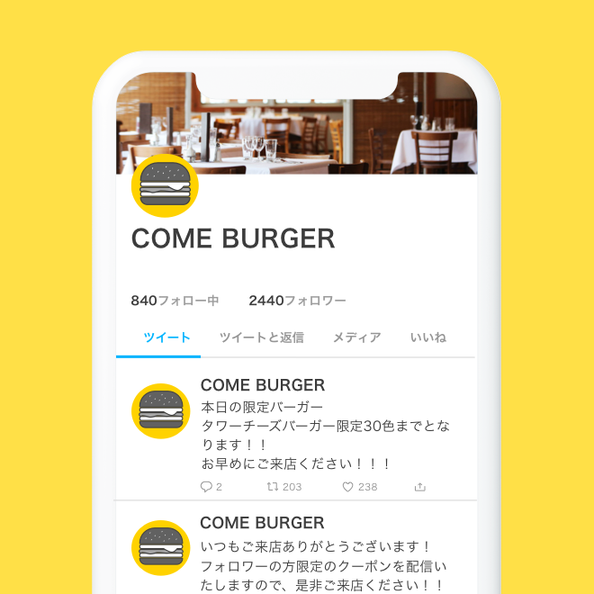
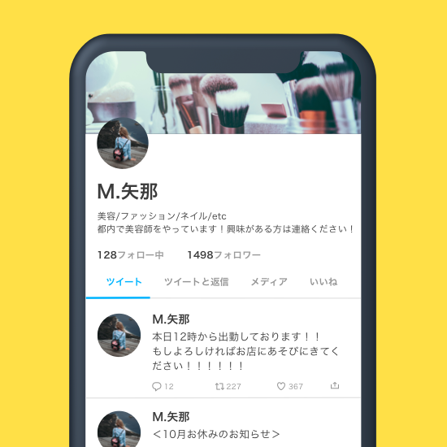

Twitterアカウント運用で
こんなお悩みありませんか？
Twitter運用のリソースがない
運用はしているけど効果が出ない
アカウントは開設できているが
運用できていない
Twitterアカウントの
運用でお困りなら、
弊社のアカウント
運用のプロに
お任せください
Twitterマーケティングのプロが
運用代行させていただきます
Twitterを含むSNSはユーザー数やアクティブ率の高さから、企業のマーケティング活動や、
個人のブランディング活動などに欠かせないツールとなっていきます。
特にTwitterは気軽なコミュニケーションを取れるSNSなので、定期的なアクションが重要です。
その一方、運用には手間と時間がかかってしまうので工数の負担が大きく運用が滞ってしまう
傾向にあります。
弊社ではTwitterアカウント運用に必要な定期アクションを揃えた独自システムを開発して
おりますので、ご要望に応じて運用改善を代行いたします。
解決できること
フォロワー獲得
ターゲットからのフォロー率UP！
アクション対象のアカウントを絞ってアプローチすることで、 ターゲットからのフォローバック率を向上することができます。
運用工数削減
定期アクションの自動化！
いいね・RT・フォローなどのアクションを弊社独自のシステムで自動化し、Twitterアカウント運用を効率化することができます。
分析効率化
レポーティング資料の作成代行！
フォロワー増減推移をレポーティング資料としてご提供することができます。
運用代行の流れ
お申し込み
本ページ下部のお問い合わせフォームよりお問い合わせください。
担当者からのご連絡
お問い合わせ後、3営業日以内に担当者からご連絡いたします。
ご提案
現状の問題や目標に合わせたプランをこちらからご提案させていただきます。
運用開始
初期設定を行い、その後運用代行を開始いたします。
- 
某飲食業界のお客様
自社で運用をしていたが社内リソースが足りず、運用をお願いしました。
お客様となりうるアカウントに対して定期的にアプローチして頂いており、
徐々にフォロワー数が伸び始めました！ご提供サービス内容
予約投稿10件
いいね上限100件/リプライ上限50件
キーワードフォロー1日上限50件
- 
美容師のお客様
今までは自分で投稿をしたりいいねやフォローを行っていたんですが、個人で運用しているので、あまり投稿する時間もなく、効果も感じられなかったので、運用代行をお願いしました。 単純な代行作業ではなく、ご提案も頂けるのでとても助かっています！
ご提供サービス内容
予約投稿50件
エリア設定
キーワードフォロー1日上限150件
投稿代行
ターゲットアカウントフォロー
ブースト
いいね上限200件/リプライ上限100件
自動リツイート
除外ワード設定
ご利用の流れ
01
お問い合わせ
お問い合わせフォームからご連絡ください
02
お支払い方法のご案内
弊社からお支払いに関するご連絡をいたします。
03
運用初期設定
貴社Twitterアカウントをサポートする為の初期設定を弊社で行います。
04
運用代行開始
ご要望に応じて運用を代行いたします。